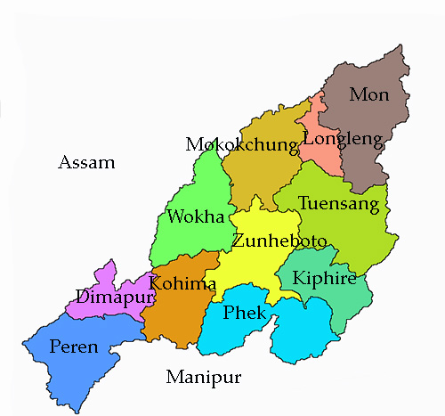
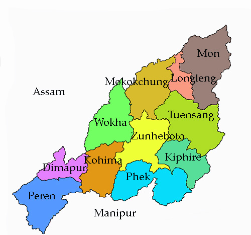
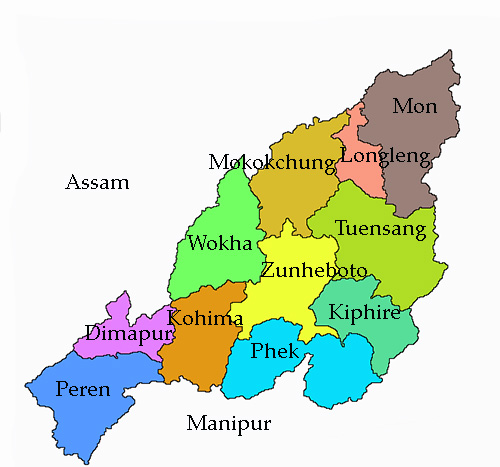
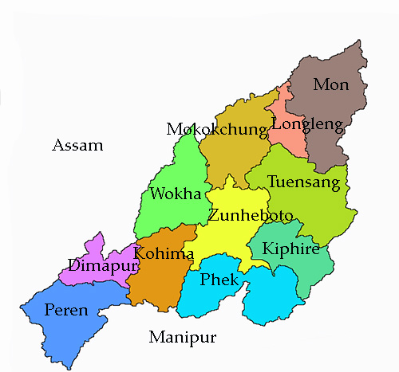

Tour Map
 



Mizoram is a state in the northeast of India. Mizoram is considered by many as a beautiful place due to its dramatic landscape and pleasant climate. There have been many attempts to increase revenue through tourism but many potential tourists find the lack of amenities to be a hurdle. However, the State continues to promote itself and many projects have been initiated. The tourism ministry continues to maintain or upgrade its tourist lodges throughout the state. Foreign tourists are required to obtain an 'inner line permit' under the special permit before visiting. The permit can be obtained from Indian missions abroad for a limited number of days or direct from Mizoram Government authorities within India. The state is rich in bird diversity, which has the potentiality to make it a major birding destination. For Mrs Hume's pheasant (Syrmaticus humiae), Mizoram is a stronghold. There is also a rare record of the wild water buffalo from the state. There are several past records of the Sumatran rhinoceros from Mizoram, then Lushai Hills.The small population of wild elephants can be seen in Ngengpui and Dampa Sanctuaries.Some of the interesting sites are Mizo Poets' Square also known as Mizo Hlakungpui Mual in Mizo, the Great Megaliths locally known as 'Kawtchhuah Ropui
The state is mostly mountainous except those areas bordering Assam valley which comprises 9% of the total area of the state. Mount Saramati is the highest peak at 3,840 metres and its range forms a natural barrier between Nagaland and Myanmar. It lies between the parallels of 98 and 96 degrees east longitude and 26.6 and 27.4 degrees latitude north. The state is home to a rich variety of flora and fauna.